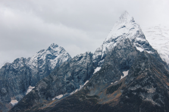
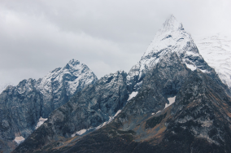
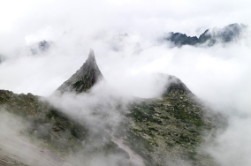
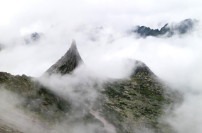
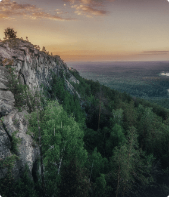

Trip around Russia
The real country isn't in the news, it's here.

YOU'VE GOT THE TOP BUNK
What didn't we see?
Why travel around your home country?
According to the Russian Public Opinion Research Center (VCIOM), 95% of Russians want to travel, but only 36% of them plan to spend their vacation in their home country. Like, what haven't we seen here, at home? Actually, Russia is a whole universe with a warm sea in the South, dense forests in the Sayan Mountains, and harsh ice in the Putorana Plateau. To see all this beauty, you don't need millions in the bank, a passport, or even a long flight. Vera Bashmakova, for example, is a brave young mother who took her three children, put them in her Lada, and drove over 12,000 miles across her homeland. We put together a list of places that are certainly worth the trip.
- Written by: Ğabdulla Tuqay
- Date: April 26, 1913
- Time zones 11
- UNESCO natural heritage sites 12
- UNESCO cultural heritage sites 16
- Nature parks 105
- Airports 241


 
 


 
 Curonian Spit
URL
park-kosa.ru
Here, in the midst of the forests and sand dunes, you can see two water horizons: the calm Curonian Lagoon on one side and the rippled Baltic Sea on the other. A unique natural area on the edge of the Russian enclave.
The Kaliningrad Region doesn't end here. For a traveler and explorer, there lies the westernmost part of Russia nearby, the Vistula Spit, with traces of its German heritage scattered across the area in a number of small costal towns. The local atmosphere is unhurried, immersing you in the tranquility of nature and the smell of the cold steel sea.
Kola Peninusla

Almost the entire peninsula is located beyond the Arctic Circle. The Sami tundra. To the south lies the taiga and to the North, the Arctic Ocean pretending to be the Barents Sea.
Perhaps, you've seen Andrey Zvyagintsev's film or heard of the Arctic Festival in Teriberk. Perhaps, the word "Khibiny" isn't buried under the snow of memories from geography classes. You may not have been interested in the unfathomable rift that permeates the Earth's crust and have long been apathetic to apathy. But your dream to see the Northern Lights begins to come true once you purchase a ticket to Murmansk.
Altai
URL
Facebook
Altai is one of the most beautiful places in Russia. First of all, for its mountains: if you travel along the mountain range, you'll see the hillsides blanketed with pine trees, mountain rivers, and lakes. And if you roll down your car windows, you'll feel the unseen miracle of these places the mountain air.
Altai has a temperate climate, so it's best to visit in summer. That will let you see the full diversity of the local flora and fauna. See elk roam the Altai forests, eagles soar over the mountain ridges, and roe deer graze along the plains. The famous Pallas's cat also inhabitants the Altai territory.
Lake Baikal in winter

Everyone knows that Baikal is the deepest lake in the world. Many people also know that it's the largest source of fresh water and one of the most beautiful places in Russia.
All this, of course, is true. Baikal is also the ideal place for skijoring competitions. It's a winter sport where a motorcycle pulls a skier and the tandem tries to gain as much speed as possible on the ice. In March, 2019, the world record of 122.41 m/hr was set at the Baikal Mile festival.
Karelia

Siberia ends in Karelia and not in the Urals: the Siberian larch that dominates the taiga landscape doesn't grow any further west than Lake Vodlozero. Even so, it grows up to 30 meters high here: the forests of Karelian national parks have never been touched by an axe due to the impassable marshes. Some pines are over five hundred years old. Touch a living being that saw the sun before Ivan the Terrible. You won't find a single trail for hundreds of miles in the primeval forest. And trees on rare paths are marked by bears' claws a few meters above the ground. That's how everyone knows who the master here is.
Into the depths of the Earth and outer space
A video by Stereotactic studios about places in Russia where fundamental research is carried out
Colors of Kamchatka
Director: Pavel Karykhalin

6:30
Observatory
Director: Alexander Khudokon

24:45
Also
recommendations from our photographers
Tsemes Bay
The main commercial harbor is not a resort, but the sea is azure blue and many ships anchor here. You can't help but marvel.

Arakulskiy Shikhan
Even for the South Urals, where beauty is everywhere, it's an outstanding landscape. There also aren't any bothersome midges here.
Cherepovets
A huge steel mill on the waterway from the Volga to the Baltic Sea. It's beautiful in its own right.

Nikola-Lenivets
Appreciate modern artists' response to the idols of the pagan temple that was located here in an ancient settlement on the Ugra river.

To Lake Baikal on the local line
Inspired by the Trans-Siberian railway and iframes: a journey from the capital to Baikal by commuter train.

Nature on the coat of arms of Russian cities

Veliky Novgorod

Rostov Veliky

Tambov

Elabuga

Perm
Barentsburg
78.0648°N 14.2335°E

Photographers photographing Russia
Their works that have won awards in international competitions were inspired by nature and people
"If you think nothing happens in Russia, just look outside..."
Viktor Lyagushkin
"If tourists go to a city, it doesn't matter what they go for: to find shambhala, Rublev's frescoes, or the birthplace of Tarkovsky, they ensure that city is filled with youth, jobs, and, eventually, with life."
Ivan Hafizov
"You come here and people tell you how bad it is. And if you show them how bad it is, you're the jerk and you you've tarnished it."
Sergey Maximishin